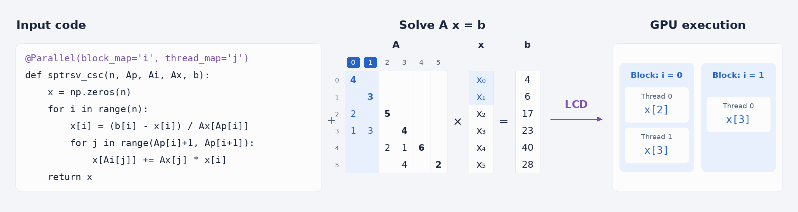
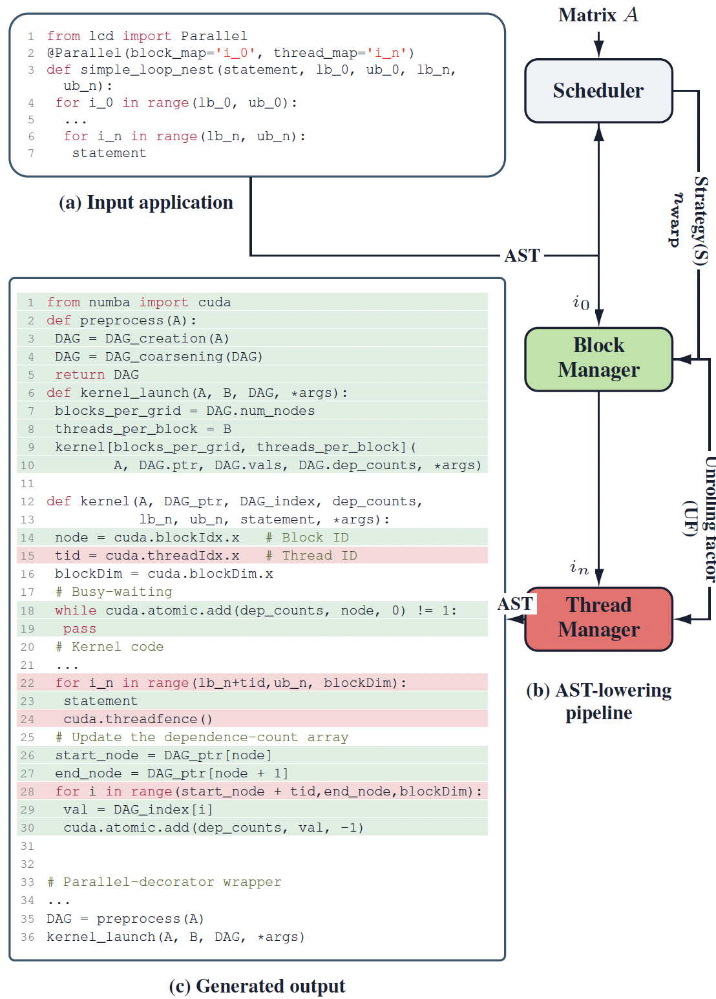

* Based on the paper: "Loop-Carried Dependence Transformation for Parallel Sparse Solvers on GPUs" by Da Ma, Mohammad Mahdi Salehi Dezfuli, Amir Mohammad Tavakkoli, Samirasadat Jamalidinan, Hossein Albakri, Mary Hall, and Kazem Cheshmi at SC'26.
Modern scientific simulations—from climate modeling and structural engineering to neural network training—rely heavily on solving massive systems of equations. GPUs are the undisputed powerhouses for these heavy computations thanks to thousands of parallel processing cores. However, scientific code frequently runs into a major obstacle: loop-carried dependences. This happens when a loop iteration needs a result calculated in a previous step, forcing operations to wait step-by-step rather than running all at once. Because sparse matrices (where most entries are zero) have unpredictable memory patterns, squeezing parallel performance out of these algorithms on GPUs has historically required manual, complex engineering.

Figure 1 demonstrates a sparse lower triangular solve kernel. While the innermost loop is parallel, the outermost loop is sequential due to read and write operations targeting the solution vector x within iterations. However, because the column and row indices stem from a sparse matrix, the coupling between iterations is relatively sparse. These sparse inter-iteration dependences create opportunities for concurrent execution. For instance, iterations with non-overlapping memory locations can be executed in parallel across independent waves of execution.
To address this challenge, researchers at McMaster University and the University of Utah developed LCD (Loop-Carried Dependence), a compiler framework and transformation technique. LCD acts as an intelligent translator that automatically transforms sequential sparse loops into highly parallelized GPU programs. Implemented as a Python Just-In-Time (JIT) compiler, LCD analyzes code annotations at runtime, constructs a directed acyclic graph (DAG) of calculations, and maps out the safest and fastest way to distribute work across GPU threads without breaking computational dependencies.
The overall LCD transformation pipeline is shown in Figure 2. The secret to LCD’s efficiency lies in its two-tiered management pipeline guided by an analytical scheduler:
In extensive benchmarks on NVIDIA H100 GPUs across 230+ sparse matrices, LCD-generated code outperformed industry-standard libraries like cuSPARSE, achieving geometric mean speedups ranging from 1.60× to 4.56× across core operations like sparse triangular solves, Gauss-Seidel iterations, and ILU preconditioning. Crucially, the compiler's initial inspection overhead to analyze matrix structures is amortized almost instantly—often breaking even after just one or two solves in real-world iterative applications.
By bridging the gap between high-level Python expressiveness and low-level GPU hardware tuning, LCD demonstrates that developer-friendly compiler abstractions can unlock hardware efficiency for complex scientific computing workloads.

For more detailed information about LCD, please refer to the LCD paper.
LCD paper: SC26 Draft
LCD code repository: https://github.com/swiftWare-Lab/lcd